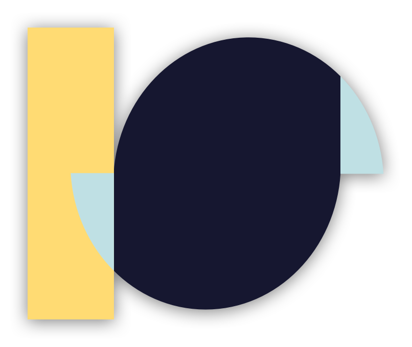

Ian SooHoo
Welcome to my site. I am a software developer with an interest in consistent user experience. I like building great software that people like to use. I have experience with front-end development with JavaScript, EJS (templating), HTML 5, and CSS 3. Additionally, I have experience with frameworks such as React and I am learning Angular.
In back-end I have the most experience using Python (including relevant modules such as Pandas Dataframes, Flask, Beatiful Soup, and NumPy), Java, and JavaScript (including NodeJS and various NPM modules). Some of my designs that I have built frameworks and concepts for can be seen at the link below.